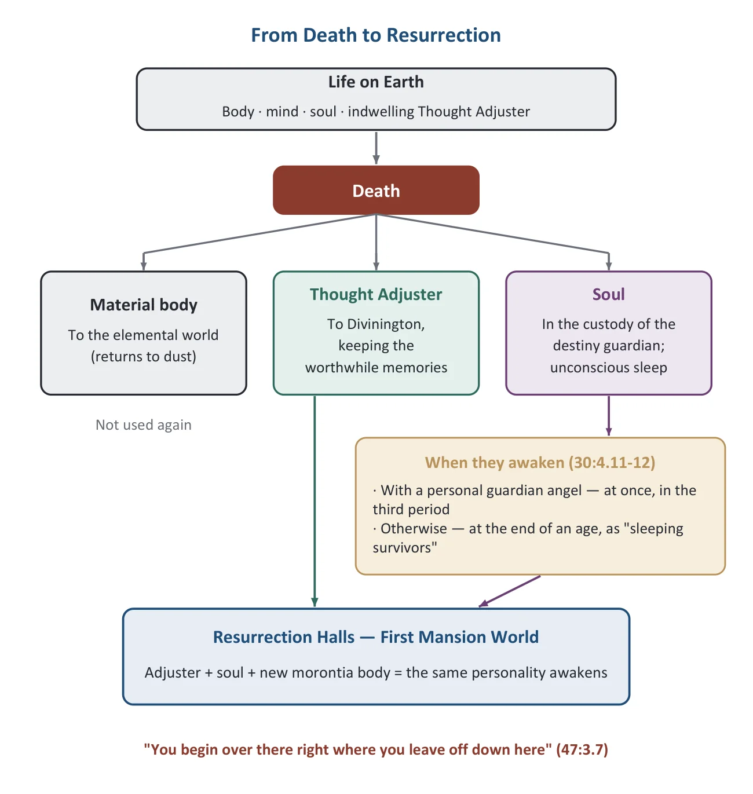
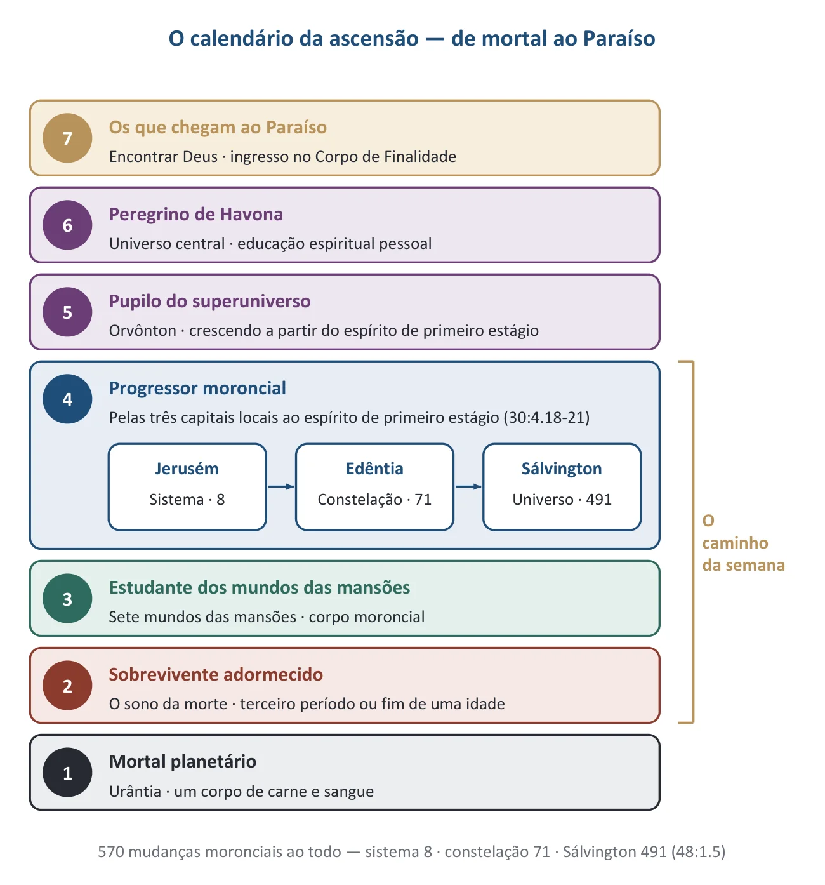

Além da morte, para a escola do universo
Leitura: Documentos 47–48 · Documento 112:3–7 · Documento 30:4 · Documento 43:8 · Documento 45:7 · Documento 46:0 · Documento 35:3

O Livro de Urântia apresenta a morte não como um fim, mas como uma porta para a vida seguinte. Depois da morte ninguém se torna de imediato um espírito perfeito; a pessoa sobe, degrau por degrau, pelo estágio moroncial, que fica entre a matéria e o espírito. Os primeiros degraus, os sete mundos das mansões, são uma escola onde o que ficou inacabado na Terra é suprido e corrigido, e onde muitos se fundem para sempre com o Ajustador residente. Nesta semana seguimos o caminho ascendente do universo local, desde a manhã da ressurreição até Jerusém, Edêntia e Sálvington.
História de abertura
As famílias que velam junto a um leito costumam fazer as mesmas últimas perguntas. Essa pessoa continuará sendo a mesma pessoa? Vamos nos encontrar de novo? O que acontece com uma vida que foi interrompida cedo demais?
Há muito tempo se oferecem às pessoas dois tipos de resposta. Um diz que a morte acaba com tudo. O outro diz que, no momento da morte, a pessoa passa direto para a recompensa ou o castigo eternos. O Livro de Urântia mostra um terceiro caminho. A morte é mais como mudar de escola. Eu acordo sendo eu mesmo, retomo o estudo onde parei e posso procurar os que foram antes de mim. Nesta semana percorremos essa nova escola, do portão de entrada até o dia da formatura.
1. A morte é um outro nascimento
Não há magia na morte
O ensinamento do livro sobre a vida após a morte começa com uma afirmação firme: a morte não transforma ninguém, num instante, em um ser acabado.
A vida moroncial, estendendo-se, tal como o faz, aos vários estágios da carreira do universo local, é o único caminho possível por meio do qual os mortais materiais podem alcançar o umbral do mundo espiritual. Que magia poderia ter a morte, a dissolução natural do corpo material, para que um passo tão elementar pudesse, instantaneamente, transformar a mente mortal e material em um espírito imortal e perfeito? A crença disso não é senão uma superstição ignorante envolta por uma fábula agradável.48:0.2
“Morôncia” designa o estado intermediário que fica entre a matéria e o espírito. Ninguém salta da vida material para a vida espiritual de um só pulo. Uma longa ponte atravessa esse vão, e essa ponte é a carreira moroncial. E a ponte também não aparece de repente na morte. A vida moroncial já começou aqui na Terra, no momento em que o Ajustador chega e a alma é concebida (48:6.2).
O que acontece no momento da morte
Então, quando a respiração pára, o que vai para onde? O documento 112 explica que o corpo, o Ajustador e a alma tomam, cada um, um caminho diferente.
Após a morte, o corpo material retorna ao mundo elementar do qual ele proveio, mas perduram dois fatores não-materiais da personalidade sobrevivente: o Ajustador do Pensamento preexistente, levando consigo a transcrição da memória da carreira mortal, e que se dirige para Divínington; e, perdura também, sob a custódia do guardião do destino, a alma imortal moroncial do humano falecido. Esses componentes, fases e formas da alma, esses que foram fórmulas cinéticas e que agora são fórmulas estáticas da identidade, são essenciais à repersonalização nos mundos moronciais. E é a reunião do Ajustador e da alma o que reconstitui a personalidade sobrevivente; e que vos reconscientiza no momento do despertar moroncial.112:3.5
O corpo volta ao pó, o Ajustador vai para casa por algum tempo levando o registro do que valeu a pena na vida, e a alma é confiada a um anjo guardião. Quando os três se reencontram, isso é a ressurreição. E o que a alma adormecida atravessa? Absolutamente nada, responde o livro.
Essa criança de significado permanente, e de valor de sobrevivência, fica inteiramente inconsciente durante o período entre a morte e a repersonalização; e permanece sob a custódia do guardião seráfico do destino, em toda essa estação de espera. Vós não funcionareis como um ser consciente, em seguida à vossa morte, até que atinjais a nova consciência moroncial nos mundos das mansões de Satânia.112:5.13
| Fator | Para onde vai depois da morte | O que faz |
|---|---|---|
| Corpo material | O mundo elementar, isto é, o pó | Não é usado de novo |
| Ajustador do Pensamento | Divínington | Guarda o registro do que valeu a pena na mente |
| Alma | A custódia do guardião do destino | Conserva o modelo da identidade, inconsciente |
| Personalidade | A singularidade outorgada pelo Pai | Reaparece na reconstituição |
| Consciência | Suspensa por algum tempo | Volta ao despertar nos mundos das mansões |
Logo, ou no fim de uma idade
Nem todos despertam ao mesmo tempo. Os que cresceram o bastante para receber um anjo guardião pessoal despertam diretamente nos mundos das mansões, “no terceiro período”. Os demais despertam em grupo quando termina uma idade e um Filho de Deus chama as listas; eles são chamados de “sobreviventes adormecidos” (30:4.11). Uma longa espera é uma desvantagem?
O passar do tempo não tem a menor importância para os mortais adormecidos; eles são totalmente inconscientes e estão esquecidos da duração do seu repouso. Quando têm a sua personalidade reconstituída, no fim de uma idade, aqueles que houverem dormido cinco mil anos não reagem de um modo diferente do daqueles que descansaram cinco dias.30:4.12
E se um caso for duvidoso? O documento 112 diz que o governo do universo sempre decide a favor da pessoa.
Os governos de Orvônton e Nébadon não proclamam a absoluta perfeição de funcionamento minucioso do plano universal de repersonalização do mortal, mas sustentam, sim, manifestar paciência, tolerância, compreensão e compaixão misericordiosa; e tudo isso eles realmente fazem. Seria preferível assumir o risco de uma rebelião sistêmica a arcar com o perigo de privar um mortal esforçado, vindo de qualquer mundo evolucionário, de continuar a sua luta até o eterno regozijo de perseguir a carreira ascensional.112:5.8
A manhã da ressurreição
O lugar do despertar são as salas de ressurreição do primeiro mundo das mansões, um vasto templo para a reconstituição da personalidade.
a reconstituição real e consciente, da personalidade factual e completa, tem lugar nas salas de ressurreição da mansônia número um. Por toda a eternidade, vós ireis relembrar-vos das impressões profundas das memórias do vosso primeiro testemunhar dessas manhãs de ressurreição.47:3.5
Quem desperta não é um estranho. A mesmíssima pessoa que viveu na Terra abre olhos novos num corpo novo.
Nos mundos das mansões, os mortais sobreviventes ressuscitados reassumem as suas vidas exatamente no ponto em que as deixaram quando colhidos pela morte. Quando partirdes de Urântia para o primeiro mundo das mansões, ireis notar uma considerável mudança; no entanto, se viésseis de uma esfera do tempo mais normal e progressiva, dificilmente notaríeis alguma diferença, a não ser pelo fato de que estaríeis de posse de um corpo diferente, pois o tabernáculo de carne e osso foi deixado para trás no mundo de nascimento.47:3.1
A expressão “exatamente no ponto em que as deixaram” é importante. A morte não torna ninguém mais sábio, nem mais santo.
No mundo das mansões de número um (ou em qualquer outro, no caso de status mais avançado), ireis reassumir o vosso aperfeiçoamento intelectual e o vosso desenvolvimento espiritual, no nível exato em que estes foram interrompidos pela morte. Entre o momento da morte planetária, ou do translado, e a ressurreição no mundo das mansões, o homem mortal não ganha absolutamente nada, além de experienciar o ato da sobrevivência. Vós começareis ali, exatamente no ponto em que vós houverdes deixado a vida aqui embaixo.47:3.7
Isso pode soar severo, mas na verdade é um consolo. Todo o aprendizado e todo o amor que juntamos hoje tornam-se, sem mudança, o ponto de partida da vida seguinte.

Palavras novas
- Morôncia: o estado intermediário que fica entre a matéria e o espírito; depois da morte a pessoa passa por ele e aos poucos se torna espírito.
- Alma: o eu imortal que a mente humana e o Ajustador residente fazem crescer juntos, e que sobrevive à morte.
- Guardião do destino: o anjo guardião designado para uma pessoa, que guarda a alma dessa pessoa depois da morte.
- Divínington: um dos mundos do Pai em torno do Paraíso, o lar dos Ajustadores do Pensamento.
Esclarecendo um mal-entendido
Um mal-entendido comum: por algum tempo as almas dos mortos vagam pela Terra e falam com os vivos, ou então renascem em outro corpo. O que diz O Livro de Urântia: até a ressurreição a alma repousa totalmente inconsciente aos cuidados de um anjo guardião. Os que seguiram para os mundos das mansões não podem enviar mensagens aos seus seres queridos, e um Ajustador que partiu nunca volta à Terra (112:3.7). A ressurreição não é um renascimento na Terra; é o despertar nos mundos das mansões.
2. A escada dos sete mundos das mansões
Muitas moradas na casa do Pai
O nome “mundos das mansões” vem de uma frase de Jesus. O documento 47 explica o nome logo nas primeiras linhas.
O FILHO Criador, quando em Urântia, falou das “muitas moradas no universo do Pai”. Num certo sentido, todos os cinqüenta e seis mundos que rodeiam Jerusém são devotados à cultura de transição dos mortais ascendentes; os sete satélites do mundo de número um, todavia, são mais especificamente conhecidos como os mundos das mansões.47:0.1
Sete “mundos de transição” giram em torno de Jerusém, a capital do nosso sistema local, e sete satélites, por sua vez, giram em torno do primeiro deles. Esses satélites são os mundos das mansões.
Ao lado da Bíblia
Na sua última noite Jesus disse: “Na casa de meu Pai há muitas moradas” (João 14:2). O Livro de Urântia lê essa frase como uma referência aos mundos reais de aperfeiçoamento onde ficamos primeiro depois da morte (30:4.17, 47:0.1). As palavras de Paulo, “Semeia-se corpo animal, ressuscitará corpo espiritual” (1 Coríntios 15:44), também podem ser lidas ao lado da manhã da ressurreição, quando despertamos numa forma nova.
Os primeiros dez dias
A primeira coisa dada aos que despertam não é uma prova nem um julgamento, mas descanso e reencontro.
Das salas de ressurreição, continuareis até o setor Melquisedeque, onde vos será designada uma residência permanente. Então, durante dez dias, ficareis em liberdade pessoal. Sereis livres para explorar a vizinhança imediata do vosso novo lar e para familiarizar-vos com o programa que virá imediatamente a seguir. E também tereis tempo para gratificar o vosso desejo de consultar o registro e visitar os vossos seres amados e outros amigos da Terra, que vos hajam precedido nesses mundos. Ao fim do período de lazer, de dez dias, dareis o segundo passo na jornada ao Paraíso; pois os mundos das mansões são, de fato, esferas de aperfeiçoamento, e não meramente planetas de detenção.47:3.6
Aqui está a resposta do livro à pergunta “Vamos nos encontrar de novo?”. E, quando terminam os dez dias de descanso, os mundos das mansões tornam-se uma escola.
O primeiro mundo — onde o que falta é suprido
As lições no primeiro mundo das mansões são quase todas corretivas.
Quase toda a experiência no mundo das mansões de número um pertence à ministração corretora de deficiências. Os sobreviventes que chegam nessa primeira das esferas de detenção apresentam tantos e tão variados defeitos de caráter de criatura, e deficiências de experiência mortal, que as principais atividades nesse reino ocupam-se da correção e da cura desses múltiplos legados da vida na carne, nos mundos evolucionários materiais do tempo e do espaço.47:3.8
Todos deixam este mundo com algumas lacunas por preencher. O primeiro mundo das mansões não repreende ninguém por elas; ele as preenche. A experiência de ser pai ou mãe é um exemplo principal. Os que não tiveram a oportunidade de criar filhos na Terra adquirem essa experiência nos lares dos Filhos Materiais em Jerusém ou no berçário probatório (47:1.4-6). E as crianças que morreram cedo demais também não são esquecidas.
Esse despertar ocorre na hora exata da chegada do progenitor ao primeiro mundo das mansões. E, então, a essas crianças são dadas todas as oportunidades que existem de escolher o seu caminho celeste, exatamente como elas teriam escolhido nos mundos onde a morte tão prematuramente pôs fim às suas carreiras.47:2.2
Um pouco mais espiritual a cada passo
Cada pessoa fica o tempo que for necessário, depois entra no “sono de trânsito” e segue para o mundo seguinte, recebendo a cada vez um novo corpo moroncial (47:3.10, 47:4.4). A direção da escada é clara.
a mansônia número um é uma esfera bastante material, apresentando os princípios incipientes do regime moroncial. Vós ainda sois quase que humanos e não estais muito afastados dos pontos de vista limitados da vida mortal, mas cada mundo descortina um progresso definido. De esfera em esfera, vos tornareis menos materiais, mais intelectuais, e ligeiramente mais espirituais. O progresso espiritual é maior nos três últimos desses sete mundos progressivos.47:4.6
Repare na palavra “ligeiramente”. Mesmo no céu, o crescimento não chega de uma só vez. No segundo mundo os conflitos da mente são curados (47:4.8), e só no terceiro começa a educação progressiva.
A educação, nos dois primeiros mundos das mansões, é, sobretudo, voltada para a natureza —negativa — das deficiências, pois tem a ver com a suplementação da experiência da vida na carne. Nesse terceiro mundo das mansões, os sobreviventes realmente dão início à sua cultura moroncial progressiva.47:5.3
No quarto mundo os ascendentes aprendem pela primeira vez uma verdadeira vida social, em que ninguém põe o ego à frente (47:6.3). Depois, no quinto mundo, vem uma grande virada.
Um nascimento real, de conscientização cósmica, acontece na mansônia de número cinco. A vossa mente está transformando-se na mente universal. Esse é verdadeiramente um tempo de expansão de horizontes. … O estudo torna-se voluntário; o serviço altruísta passa a ser natural e a adoração espontânea. Um caráter verdadeiramente moroncial está florescendo; e uma criatura moroncial real está evoluindo.47:7.5
Quando o que antes se fazia com esforço começa a fluir por si mesmo, isso é sinal de crescimento. A fusão no sexto mundo é tratada na seção 4. No sétimo mundo até as diferenças do planeta de origem são apagadas.
A experiência nesta esfera realiza o coroamento da imediata carreira pós-mortal. … Quaisquer diferenças discerníveis entre os mortais provenientes de mundos isolados e retardatários e os sobreviventes de esferas mais avançadas e esclarecidas são virtualmente minimizadas durante a permanência no sétimo mundo das mansões. Ali, sereis purgados de todos os remanescentes de uma hereditariedade desafortunada, de um meio ambiente pouco sadio e das tendências planetárias não-espirituais.47:9.1
Isso é uma promessa de que ter nascido em Urântia, um mundo atingido pela rebelião, não será um peso eterno. Os que concluem o sétimo mundo partem juntos, como uma turma, para Jerusém (47:9.3).

3. A vida moroncial — companheiros, educadores e memória
Vou me lembrar de mim mesmo?
A chave da pergunta “Continuarei sendo eu?” é a memória.
A memória do vosso Ajustador permanece integralmente intacta à medida que ascenderdes na vida moroncial. Aquelas associações mentais que eram puramente animalescas e totalmente materiais pereceram naturalmente com o cérebro físico, mas, na vossa vida mental, tudo o que valeu a pena, que tinha valor de sobrevivência, recebeu uma contraparte provida pelo Ajustador e fica guardado como uma parte da memória pessoal, durante todo o caminho da carreira ascendente. Estareis conscientes de todas as vossas experiências dignas e valiosas, na medida em que avançardes de um mundo das mansões para outro e de uma seção do universo para outra — até o Paraíso.47:4.5
O que tem valor permanece; o que não tem significado desaparece com o cérebro. No começo a vida passada pode parecer um sonho vago, mas ela fica mais clara com o tempo (112:5.21). E os laços entre as pessoas nunca são descartados.
Contudo, a personalidade e as relações entre as personalidades nunca são andaimes; a memória mortal das relações das personalidades tem valor cósmico e perdurará. Nos mundos das mansões, vós conhecereis e sereis conhecidos, e mais, lembrareis e sereis lembrados pelos que foram, uma vez, companheiros vossos na vossa vida curta, mas estimulante, em Urântia.112:5.22
Um corpo cujo exterior corresponde ao interior
Nos mundos das mansões as pessoas ainda comem, bebem e descansam (47:4.6). Ninguém se transforma em fantasma. Há, no entanto, uma grande diferença.
Na vida física, os mortais podem ser belos por fora, ainda que sejam pouco amáveis por dentro; na vida moroncial, e de forma crescente, nos seus níveis mais elevados, a forma da personalidade variará diretamente de acordo com a natureza da pessoa interior.112:6.3
Nos mundos moronciais a pessoa interior aparece claramente no exterior. O caminho para se tornar belo ali começa por cuidar do coração hoje.
Um amigo caloroso: o Companheiro Moroncial
Ninguém percorre sozinho o caminho dos mundos das mansões. Um amigo está ali desde o primeiro momento do despertar.
Um deles certamente estará disponível para dar-vos as boas-vindas, ao acordardes no mundo inicial das mansões, vindos do vosso primeiro sono de trânsito do tempo, quando experienciareis a ressurreição da morte na carne para a vida moroncial. E, desde o momento em que vós receberdes as boas-vindas, formalmente, ao acordardes, até aquele dia em que deixareis o universo local como um espírito do primeiro estágio, esses Companheiros Moronciais estarão sempre convosco.48:3.8
O Companheiro Moroncial é guia, intérprete e companheiro nos passeios. O documento 48 acrescenta uma observação encantadora.
Eles não são, tecnicamente, essenciais a qualquer parte da vossa experiência de sobrevivência. Vós poderíeis alcançar Sálvington sem eles, mas eles vos fariam muita falta. Constituem-se em um luxo para a personalidade, na vossa carreira ascendente no universo local.48:3.18
O plano de Deus contém não só o necessário, mas também a alegria. A vida ascendente é dividida quase igualmente entre o trabalho e a diversão (48:4.1), e o riso tem um lugar importante.
Uma das funções do humor é ajudar cada um a levar-se menos a sério. O humor é o antídoto divino para a exaltação do ego.48:4.15
Os Mestres dos Mundos das Mansões e as três escolas
Os Mestres dos Mundos das Mansões são os querubins e sanobins que antes ajudavam os anjos guardiães aqui na Terra. Como já partilharam da nossa experiência, eles nos compreendem bem (48:5.9). As suas escolas são organizadas assim.
Nas escolas de vida moroncial, esses educadores engajam-se no ensino individual e grupal, de classes e de massa. Nos mundos das mansões, essas escolas são organizadas em três grupos gerais de cem divisões cada: as escolas do pensamento, as escolas do sentimento e as escolas da ação. Quando alcançardes a constelação, as escolas de ética, administração e ajustamento social, serão acrescentadas. Nos mundos sedes-centrais do universo, entrareis nas escolas de filosofia, de divindade e de espiritualidade pura.48:5.6
Saber, sentir e viver devem crescer juntos. E nesta escola não há atalhos.
Aquelas coisas que poderíeis ter aprendido na Terra, mas cujo conhecimento não obtivestes, devem, então, ser aprendidas sob a tutela desses instrutores fiéis e pacientes. Não existem caminhos mais nobres, nem atalhos especiais, ou sendeiros fáceis para o Paraíso. Independentemente das variações individuais de itinerário, deveis conquistar a mestria das lições de uma esfera, antes de prosseguirdes para outras;48:5.7
Um dos propósitos da carreira moroncial é extirpar, permanentemente, dos sobreviventes mortais os vestígios de características animais, tais como a procrastinação, os equívocos, a insinceridade, o escapismo aos problemas, a injustiça e a opção pelo mais fácil.48:5.8
A procrastinação encabeça a lista. A lição de casa adiada na Terra ainda estará esperando lá. Um dos ditos da filosofia humana usados no primeiro mundo das mansões para ensinar a “mota” resume com exatidão o ensinamento desta semana (48:7.1).
O destino da eternidade é determinado, momento a momento, por aquilo que é realizado na vida do dia-a-dia. Os atos de hoje são o destino de amanhã.48:7.26

Palavras novas
- Companheiros Moronciais: filhos do Espírito Materno do universo local, amigos que acolhem e guiam os ascendentes.
- Mestres dos Mundos das Mansões: querubins e sanobins glorificados, outrora ajudantes dos anjos guardiães, que agora ensinam os ascendentes.
- Mota: a sabedoria moroncial, mais elevada que a filosofia humana.
4. O dia da unidade com o Ajustador
Uma idade brilhante
O Ajustador do Pensamento, que habitou silenciosamente dentro de uma pessoa, um dia se tornará um só com ela para sempre. Isso é a “fusão”. A fusão costuma acontecer nos mundos das mansões ou em Jerusém, embora às vezes aconteça na Terra sem a morte, e às vezes seja retardada até a capital do universo (112:7.3).
Essa é uma idade brilhante, para os mortais ascendentes, os quais habitualmente testemunham a fusão perfeita da mente humana e do Ajustador divino. Em potencial, essa fusão pode já haver ocorrido anteriormente, mas a identidade de funcionamento real muitas vezes só é alcançada depois do tempo de permanência no quinto mundo das mansões, ou mesmo no sexto.47:8.3
No dia da fusão realiza-se uma breve cerimônia diante dos companheiros.
A união da alma imortal em evolução com o Ajustador eterno e divino fica assinalada por uma convocação seráfica, feita pelo superanjo supervisor dos sobreviventes ressuscitados e pelo arcanjo que registra aqueles que vão a julgamento no terceiro dia; e, então, em presença dos companheiros moronciais do sobrevivente, esses mensageiros da confirmação dizem: “Este é um filho amado, em quem eu muito me comprazo”. Essa cerimônia simples marca a entrada de um mortal ascendente na carreira eterna de serviço até o Paraíso.47:8.4
Imediatamente depois da confirmação da fusão com o Ajustador, o novo ser moroncial é apresentado pela primeira vez aos seus companheiros com o seu novo nome. E lhe são concedidos os quarenta dias de retiro espiritual, de todas as atividades rotineiras, durante os quais ele irá comungar consigo mesmo e escolher um, dentre os caminhos opcionais para Havona e dentre as técnicas diferentes de alcançar o Paraíso.47:8.5
A fusão não é um fim, mas um novo começo.
Ao lado da Bíblia
Quando Jesus foi batizado no Jordão, uma voz do céu disse: “Este é o meu Filho amado, em quem me comprazo” (Mateus 3:17). O Livro de Urântia nos diz que as mesmas palavras são pronunciadas sobre todo ascendente que se funde com o Ajustador (47:8.4). O “novo nome escrito” numa “pedra branca”, em Apocalipse 2:17, também pode ser lido ao lado do novo nome recebido depois da fusão.
Nunca mais separados
Depois da fusão já não há nenhum perigo de perder a vida eterna (112:7.4).
Ao longo dessa magnífica ascensão, o Ajustador do Pensamento é a garantia divina da futura estabilização espiritual plena do mortal ascendente. Ao mesmo tempo, a presença do livre-arbítrio mortal confere ao Ajustador um canal para a libertação da sua natureza infinita e divina. E agora que essas duas identidades transformaram-se numa única, nenhum evento no tempo ou na eternidade pode jamais separar o homem e o Ajustador;112:7.10
O ser humano recebe a eternidade do Ajustador, e o Ajustador recebe do ser humano um canal de personalidade. Visto do lado de Deus, isso é o cumprimento de uma promessa.
Com a fusão ao Ajustador, o Pai Universal completou a Sua promessa da dádiva de Si mesmo às Suas criaturas materiais; Ele haverá cumprido a promessa, e consumado o plano de outorga eterna da divindade à humanidade. Agora, inicia-se o intento humano de realizar e de tornar factuais as ilimitadas possibilidades que são inerentes à superna união com Deus, que assim se realizou.112:7.14
Ainda assim, os fusionados ainda são um tanto materiais e estão um pouco abaixo dos anjos (47:8.6). A fusão garante a eternidade; não põe fim ao crescimento. A semana 10 examina os Ajustadores mais a fundo.
Esclarecendo um mal-entendido
Um mal-entendido comum: tornar-se um com Deus significa que o eu individual desaparece, como uma gota de água que se dissolve no mar. O que diz O Livro de Urântia: o ser fusionado é uma personalidade una, que não pode ser analisada em partes (112:7.8); contudo, em todas as questões de personalidade é o ser humano que toma a dianteira, porque foi ele quem primeiro possuiu personalidade (112:7.12). O fusionado continua sendo chamado de “mortal ascendente” até o fim. O eu não é apagado; eu continuo sendo eu mesmo para sempre.
5. Jerusém, Edêntia e Sálvington
Jerusém — a capital do sistema
Os que concluem o sétimo mundo das mansões são despedidos pelos companheiros reunidos no mar de cristal e partem para se tornar cidadãos de Jerusém, a capital do sistema (47:9.4).
A ordem e a boa vontade estão sendo restauradas e as condições em Jerusém aproximam-se cada vez mais do status celeste das vossas tradições, pois a sede-central do sistema é verdadeiramente o céu visualizado pela maioria dos crentes religiosos do século vinte.46:0.1
Aquilo que comumente se chama “céu” revela-se a primeira grande estação de uma longa viagem. Ali os ascendentes aprendem a governar juntos.
Os Filhos Melquisedeques conduzem mais de trinta centros educacionais diferentes, em Jerusém. Essas escolas de aperfeiçoamento começam com o colégio de auto-avaliação e terminam com as escolas de cidadania de Jerusém, onde os Filhos e Filhas Materiais juntam-se aos Melquisedeques e a outros, no seu esforço supremo de qualificar os sobreviventes mortais para assumir as altas responsabilidades do governo representativo. Todo o universo encontra-se organizado e administrado segundo um plano representativo. O governo representativo é o ideal divino do autogoverno entre os seres que não são perfeitos.45:7.3
Edêntia — onde aprendemos a viver juntos
Depois de Jerusém vem Edêntia, a sede-central da constelação, rodeada por setenta mundos educacionais.
O tempo passado nos setenta mundos educacionais de cultura moroncial de transição, somado ao tempo de ascensão mortal, em Edêntia, forma o período mais estabilizado na carreira de um mortal ascendente, até o status de finalitor; essa é, pois, realmente a vida moroncial típica. Do mesmo modo que passareis por uma ressintonização, todas as vezes que tiverdes de passar de um mundo cultural maior até outro, ireis manter o mesmo corpo moroncial; e não há períodos de inconsciência da personalidade. A vossa permanência, em Edêntia e nas suas esferas interligadas, será ocupada principalmente com a mestria da ética grupal, o segredo do inter-relacionamento agradável e profícuo entre as várias ordens de personalidades inteligentes do universo e superuniverso.43:8.2-3
Aprender a conviver com seres diferentes de nós, sem irritação, é o currículo de Edêntia (43:8.9). Sobre os seus jardins, o autor confessa o seguinte.
Se apreciardes as flores, os arbustos e as árvores de Urântia, então tereis uma festa para os vossos olhos, com a beleza botânica e a grandeza floral dos jardins supernos de Edêntia. Mas está além dos meus poderes de descrição tentar transmitir à mente mortal uma idéia adequada de tais belezas dos mundos celestes.43:6.8
Sálvington — a universidade do universo
Depois de se formarem na constelação, os ascendentes chegam a Sálvington, a capital do universo local. Os 490 mundos em torno dela são chamados de Universidade Melquisedeque.
Essas esferas maravilhosas — setenta primárias e 420 tributárias — são muito freqüentemente chamadas de Universidades Melquisedeques. Os mortais ascendentes de todas as constelações de Nébadon passam por aperfeiçoamentos, em todos os 490 mundos, para adquirirem o status de residência em Sálvington.35:3.1
Sobre a primeira estação ali, o mundo dos Melquisedeques, o documento 35 diz o seguinte.
Para um ascendente, este é, provavelmente, o mundo mais interessante de todo o Nébadon. … E nunca vos esquecereis das vossas reações do primeiro dia de vida nesse mundo único, nem mesmo depois que houverdes alcançado o vosso destino no Paraíso.35:3.11
Quando os estudos de Sálvington terminam, a longa ponte moroncial foi atravessada, e o ascendente torna-se espírito.
Os mortais adquirem uma identidade espiritual real um pouco antes de deixarem a sede-central do universo local e irem para os mundos de recepção dos setores menores do superuniverso. Passar do estado moroncial final para o primeiro, ou o mais baixo, status do espírito, não é senão uma transição ligeira. A mente, a personalidade e o caráter permanecem imutáveis durante esse avanço; apenas a forma passa por uma modificação.30:4.20
Ao longo desse caminho o corpo moroncial muda 570 vezes ao todo.
Desde o momento em que houverdes deixado os mundos materiais, até vos tornardes um espírito do primeiro estágio, em Sálvington, vós ireis passar exatamente por 570 mudanças moronciais diferentes e ascendentes. Oito dessas mudanças ocorrem no sistema; setenta e uma na constelação; e 491 durante a vossa permanência nas esferas de Sálvington.48:1.5
| Estação | Que tipo de lugar | Lições principais | Mudanças moronciais |
|---|---|---|---|
| Jerusém e os mundos das mansões | Capital do sistema de Satânia | Suprir deficiências, unificar a personalidade, governo representativo e cidadania | 8 |
| Edêntia | Sede-central da constelação de Norlatiadeque, 70 mundos educacionais | Ética grupal, convivência com outros seres | 71 |
| Sálvington | Capital do universo local de Nébadon, 490 mundos da Universidade Melquisedeque | Filosofia, divindade, espiritualidade pura, administração do universo | 491 |
Por que uma escola tão longa?
Por que Deus não torna as pessoas perfeitas de uma vez e as leva direto para o Paraíso?
O plano de sobrevivência para os mortais tem um objetivo prático e útil; vós não sois os receptáculos, de todo esse trabalho divino e desse aperfeiçoamento cuidadoso, apenas para poderdes sobreviver e gozar de uma bênção infindável e uma tranqüilidade eterna. Há uma meta de serviço transcendente, oculta além do horizonte da presente idade do universo.48:8.3
O universo não é uma estância de férias, mas uma escola, e no fim da escola está o serviço. Deus está formando parceiros que trabalharão ao Seu lado. Um único dia na Terra é a primeira série dessa escola.

Palavras novas
- Jerusém: capital do sistema local de Satânia, onde os ascendentes que concluem os mundos das mansões tornam-se cidadãos.
- Edêntia: sede-central da constelação de Norlatiadeque, onde, em setenta mundos educacionais, os ascendentes aprendem a viver juntos.
- Sálvington: capital do universo local de Nébadon, onde os ascendentes passam pela Universidade Melquisedeque e se tornam espíritos do primeiro estágio.
Pontos-chave da semana
- A morte não transforma ninguém num espírito perfeito num instante. Entre a matéria e o espírito está a carreira moroncial.
- Depois da morte o corpo volta ao pó, o Ajustador vai para Divínington e a alma é guardada pelo guardião do destino. A ressurreição é o reencontro dos três nas salas de ressurreição dos mundos das mansões.
- A pessoa recomeça exatamente onde a morte a deixou, e pode procurar e encontrar os seres queridos que foram antes.
- Os sete mundos das mansões são uma escola, desde o primeiro mundo, onde as deficiências são supridas, até o sétimo, onde os ascendentes se preparam para a cidadania em Jerusém, tornando-se ligeiramente mais espirituais a cada passo.
- As memórias que valeram a pena e os laços entre as pessoas não desaparecem. Os Companheiros Moronciais e os Mestres dos Mundos das Mansões percorrem o caminho conosco.
- Muitos se fundem com os seus Ajustadores no quinto ou no sexto mundo das mansões, e depois disso a carreira eterna já não corre risco.
- Passando por Jerusém, Edêntia e Sálvington, a pessoa torna-se um espírito do primeiro estágio, e a meta dessa longa escola não é um descanso sem fim, mas um serviço transcendente.
Perguntas para refletir
- “Vós começareis ali, exatamente no ponto em que vós houverdes deixado a vida aqui embaixo” (47:3.7). O que isso diz sobre as coisas que você está adiando hoje?
- As primeiras escolas dos mundos das mansões são as escolas do pensamento, do sentimento e da ação. Que luz isso lança sobre o equilíbrio na sua vida de fé?
- Como a idéia de que Deus está preparando você não para férias eternas, mas para o serviço, poderia mudar o seu modo de ver a morte e a vida?
Leitura para a próxima semana
- Documentos 49–55 — Os mundos habitados, as idades por que passa um planeta, a rebelião de Lúcifer e o destino de luz e vida